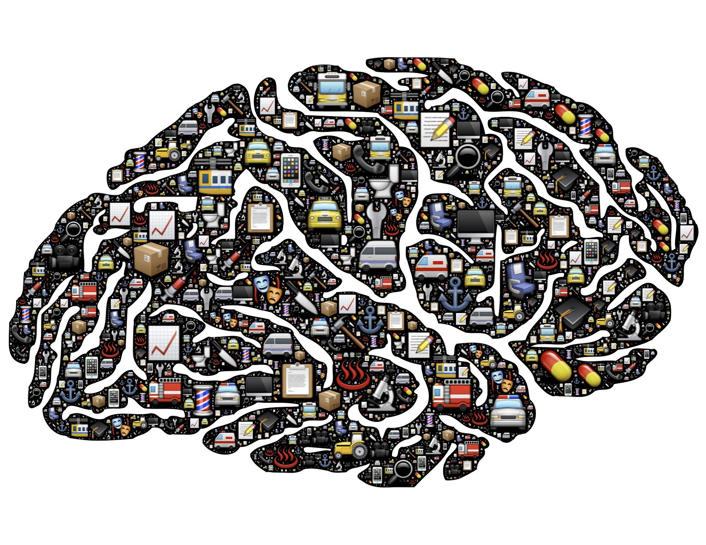
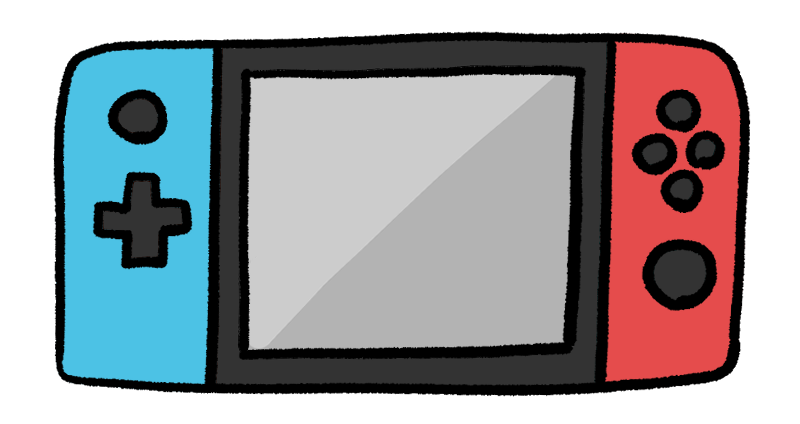
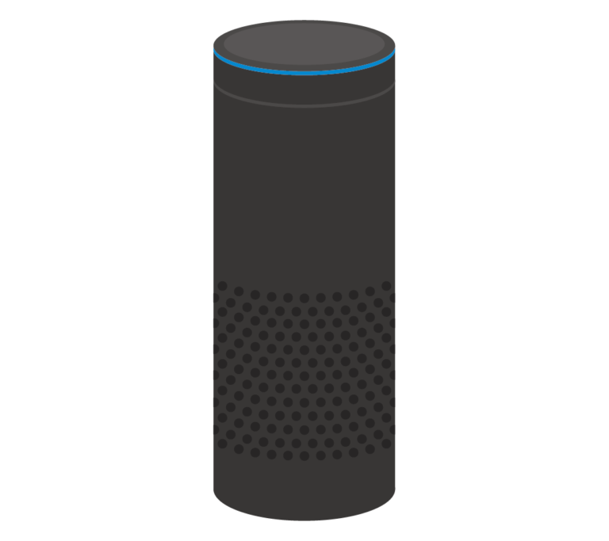
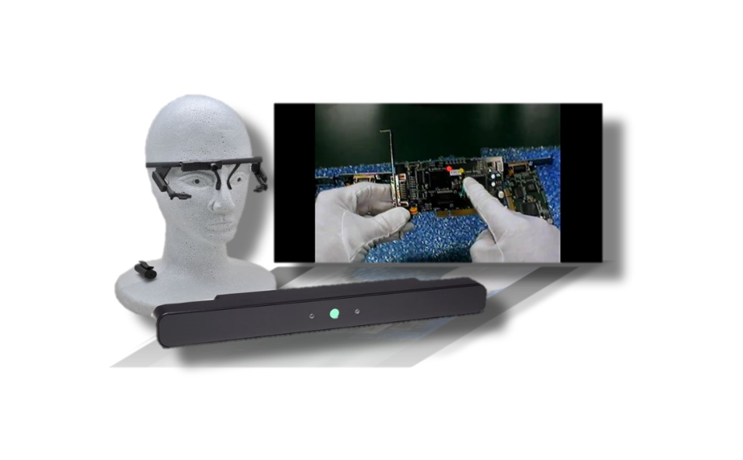

認知工学とは
認知工学とは、「認知科学や心理学の知見に基づき、人の認知や行動の特性を考慮して、物の設計を試みる研究分野」である。
認知科学の人の心や思考などを情報理論として研究しているものと、心理学の人の心の動きとそれによっておこる行動を探求しているものから、人を中心に考えたシステムを設計するものである。
要約すると、いかにして行動を促すか、どのようにすれば楽しいと感じるのかといったことを、人間の認知特性や行動特性を考え設計するということである。
背景
こうした問題意識は、すでに第一次世界大戦（1914ー18）の頃からアメリカで、使いやすい兵器の開発を契機に工学関係者に共有され、それが、第二次世界大戦を経て「人間工学」という新たな研究領域を生み出した。
そこから発展し、「認知工学」となった。「認知工学」のねらいも、人間工学のそれと基本的には同じである。 両者の違いは、一つは、対象とする道具や機械にある。
もう一つの違いは、人間工学では、「使いやすい」道具/機械の設計のために、人の物理的、生理的特性のほうに主たる関心を向けるのに対して、認知工学では、「わかりやすい」情報環境の設計のために、人の認知特性のほうにより関心を向けるところにある。
こうした違いは、道具や機械の時代変化を反映している。２０世紀後半、コンピュータのパワーアップと普及に伴い、社会の至るところで「もの（物）」から「こと（情報）」への劇的なパラダイムシフトが起こった。
社会が情報の生産、流通、消費を中軸とする情報化社会になってきた。よって、人間工学に加えて新たに、認知工学を必要とする時代の流れが出てきた。
理由・具体例
具体例： 色での男女の認識、ロード中のぐるぐる 緊急時の大文字や！、クリックするときの指マーク
➡そのため人に対し、人間の認知特性・行動特性を考えて設計し、行動誘発や行動誘導を行おうということである。
- aaa
- aaa
具体例
-
色での男女の認識
-
ロード中の待機
-
緊急時の大文字や！
-
クリックするときの指マーク
ヒューマンインターフェース
ヒューマンは人間のことを意味する。
インターフェースは接点、境界面、接触面、接合面、仲立ち、橋渡しなどの意味する言葉である。コンピュータでは、キーボードなどの人間が直接利用する入出力装置や、データの入力画面などのソフトウェアやアプリケーションがこれに当たる。
つまり、ヒューマンインタフェースの意味は「人間と機械との接点のこと」である。

人間と機械が情報をやり取りするための手段や、そのための装置やインターフェースの総称のことである。
人間が機械を操作したり、機械が現在の状態や結果を人間に知らせる手段やそのための道具のことを指す。
機械が情報を伝える手段としては液晶画面やメーター、ランプ、スピーカーなどが含まれ、人間が指示を与える手段としてはスイッチやボタン、ハンドル、ダイヤル、ペダル、リモコン、マイク、キーボード、マウスなどが含まれる。
目的
私たちが機械を使用する目的は、機械を操作することではなく、機械を使用して実世界の対象物に変化を加えることである。 そのため、機械が介在していることを意識することなく、操作することが良いことである。
対象物を変化させたいとき、人間の機械による作業が入ってしまうことは、直感的な作業を害する。 機械が間に入ってしまうことにより、発生してしまう分かりにくさを無くしていくことが、最も重要な目的である。

ヒューマンマシンインターフェース
現在の機械は複雑化・高度化しており、その進化は将来も続くだろう。HMIもそれに追随した改善が求められている。また、ユーザーの多様化やユーザーが求める体験への対応に対してもHMIが果たす役割は非常に大きいと言える。 例として3つ挙げる。
- aaa
- aaa
具体例
触覚フィードバッグ
ボタンやスイッチだったところをタッチパネルに置き換える動きがあるが、ボタンのように指の触覚で押し終わったことが分からない、視覚に障がいがある人にはボタンの場所が分からないという欠点がある。 これを補う技術として触覚フィードバックという技術が期待されている。iPhoneではOSバージョン13以降で触覚タッチという機能が実装され、Nintendo Switchは触覚フィードバック機能を売りにしている。 車載分野では、運転手がタッチパネルを見つめることは危険なため、触覚でパネル上のボタンの位置を把握して操作ができるような技術開発が進められている。AIスピーカー
人と人の主なインターフェースは会話、つまりは音声である。人と機械のインターフェースにも音声を用いることは自然な発想である。 近年、AIスピーカーやスマートスピーカーなどと言われる商品が登場した。スマートフォンやPCのような機械自体にその機能を搭載したものはAIアシスタントと呼ばれている。 音声インターフェースの良い点は両手と視線が自由になることである。自然なHMIでもあるので、今後の音声認識・音声合成技術の精度向上が期待される。アイトラッキング
視線をHMIに活用することも考えられている。例えば、PCを操作する際に、視線でマウスカーソルを動かして、長めのまばたきでクリックする、というような活用方法だ。 アイトラッキングが実用化すれば両手が自由になる可能性があり、前項の音声インターフェースも同様に、身体障がい者にも利益のあるHMIと言える。-

触覚フィードバッグ
-

AIスピーカー
-

アイトラッキング
課題と展望
課題
開発にあたっては、人間の能力と限界を常に考慮する必要がある。マシンの操作は、複雑すぎたり、過度の熟練を要するものであってはならない。人間とマシンが円滑にコミュニケーションするためには、コマンドと動作の間の応答時間をできるだけ短くする必要があり、そうでなければユーザーにはそのインタラクションが不自然に感じられる。展望
将来は、様々なセンサーから得られるますます多くのデータを結合して、複雑なプロセスを把握して制御できるようになるだろう。そして、リモコン、コンピュータキーボード、オンオフスイッチなど、今は普通に使われている入力デバイスは少なくなっていくと予想される。
コンピュータシステム、デバイス、マシンが学習を続けて、さらに多くのデータを取得すれば、ますます人間に似てくることになり、そうなると感覚器官の役割を引き受けることになる。
カメラは視覚を、マイクは聴覚を、センサー内蔵の衣服は触覚を実現するだろう。